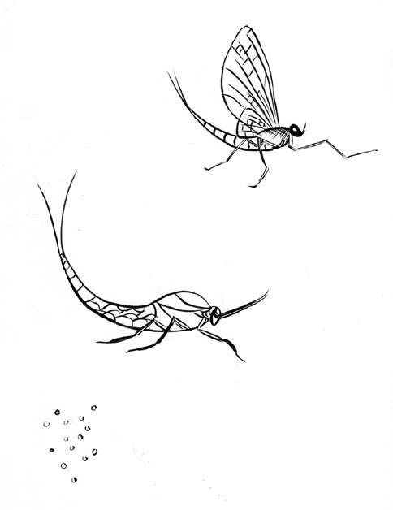

1927年，澳大利亚昆士兰大学的托马斯·帕内尔（Thomas Parnell）教授开始了历史上耗时最长的实验——沥青滴漏实验。
沥青分为石油沥青、煤焦沥青和天然沥青，常温下外观很像石块，加热后处于黏性状态，极具可塑性，可用于船体防水。室温下，沥青坚硬而易碎，一锤子下去很容易就七零八碎。如果将沥青加热后置之不理，凝固后它会一直保持原样，至少几年内不会发生任何改变。
帕内尔教授对沥青这种物质很好奇，想向学生们证明这样一个理论：沥青虽然看上去是固体，但实际上是黏性极高的液体。所以他将一块沥青加热后放入一个封了口的漏斗，封装三年让沥青慢慢沉淀凝固，然后将漏斗的封口切开，等待沥青滴落。8年后，1938年的12月，第一滴沥青落下，这一眨眼的工夫距离实验开始已经过去了11年。
从那时起，沥青开始缓慢滴落。截至本书写作时，该实验已经进行了80多年，现在第9滴沥青刚刚滴落。每一滴沥青滴落的时间不等，例如，第6滴沥青于1979年4月落下，距离上一滴落下8.7年，但第7滴花了9.3年才于1988年7月滴落，之后又过了12.3年，下一滴才在2000年11月掉落。
从漏斗图片可以看出来，一大滴沥青悬挂在漏斗下方，摇摇欲坠似乎随时都会滴落，但仍过了若干年才真正落下，沥青滴落时只需八分之一秒。帕内尔教授现已去世，该实验目前的监护人是约翰·梅德斯通（John Maidstone）。他从1961年1月开始观测这个实验，沥青滴落这一“盛事”总共发生了5次，他全都错过了。1988年，就在他泡杯茶的工夫，沥青滴落了；2000年11月，他去伦敦之前放置了一台摄像机进行监测，回来的时候却发现因为摄像机出了故障，滴落那一刻又没有被捕捉到。梅德斯通说那是他一生中最难过的时刻。
事实上从来没有人亲眼见证过沥青滴落的那一刻。但下一次人们肯定会看到，无论是在现场实时观看还是通过视频。为了不再次错失盛事，梅德斯通现在使用了3台摄影机始终对准沥青，期望拍摄到它滴落的那一刻。不过，世界各地其他的观众就只能在线观看了，大家可以登录昆士兰大学数学和物理学院的网站观看直播。
如果各位受这个实验影响进而爱上此类事物，我向大家推荐一个“观看小草生长”的网站www.watching-grass-grow.com，顾名思义，各位应该会很喜欢！
相比地球上其他生物，人类其实很长寿，虽然不同地区的人的寿命也因人而异（请参见153页）。
植物学家和生态学家杰里安·普兰斯（Ghillean Prance）的研究表明：“如果给世界上所有生物都写本自传的话，最薄的那本应该属于蜉蝣——出生、进食、繁殖、死亡。它停下来不是为了进食就是为了交配，蜉蝣从幼虫进化到亚成虫阶段会进食，蜕变成虫后不再进食。雌性和雄性直接在空中交配，通常只能活1天至2天。”值得一提的是，蜉蝣要经历一段长达一年的“幼虫”或“稚虫”期才能进入它“昙花一现”的成虫期。

一只蜉蝣短暂的一生
动物界中，昆虫应该是寿命最短的物种。哺乳动物中，家鼠的寿命是最短的，活到4岁已属高龄。鱼类中，食蚊鱼活到2岁就够资格领退休金了。鸟类中的蜂鸟如果能活到7岁或8岁就已经相当长寿。
动物王国中，亚洲象曾活到86岁；鸟类中寿命最长的是金刚鹦鹉，圈养环境下能活到100多岁；新西兰类蜥蜴爬行动物喙头蜥（tuatara）可以活到200岁；日本锦鲤在合适的环境下甚至能活200多岁，日本有一条名叫“花子”（Hanako）的锦鲤寿命长达226岁，生于1751年，死于1977年；格陵兰岛的鲨鱼原产自北大西洋，据说能活200年左右；厄瓜多尔加拉帕戈斯群岛行动缓慢的象龟目前最高年龄纪录大约为190岁，很多龟都能活到150岁以上；没有意外的话，据说弓头鲸也能活到200岁左右。
已知的寿命最长的生物是双壳纲软体动物（身体包裹在两片贝壳中）。2007年，人们在冰岛海岸发现了一个年龄在405岁到410岁之间的圆蛤，并给它取名为“明”（Ming，因为按年龄推算它生于中国明朝）。人们是根据它贝壳上每年生长的纹理来推算年龄的，但被人类发现后，“明”于研究过程中死亡。很难想象如果人类没有发现它，它还会在海床上继续存活多少年。
最长寿的老人
根据《吉尼斯世界纪录大全》，法国的让娜·卡尔芒（Jeanne Calment）是寿命最长的老人，1997年去世时已是122岁零164天的高龄。卡尔芒之前，该纪录一直由日本百岁老人泉重千代（Shigechiyo Izumi）保持，但后来泉重的年龄出现争议，人们认为他只活了105岁而非120岁，因此该纪录最终又被取消。令人惊讶的是，泉重每天都喝酒，从70岁起还开始抽烟，却依然很长寿。本书写作期间，日本一位女性老人大川美佐绪（Misao Okawa）已115岁，被吉尼斯世界纪录认定为世界健在最长寿老人。2013年6月，此前最长寿的老人木村次郎右卫门（Jiroemon Kimura）以116岁高龄去世。
南极洲附近有1万多岁的海绵动物，新西兰海岸有4 000多岁的黑珊瑚。
不过除寿命外，我们还应该考虑一下各种生物迥异的运动速度和经历。乌龟的寿命很长，而它如冰河运动般缓慢的速度跟它的寿命也确实很匹配。娇小的蜂鸟在空中悬停时翅膀扇动速度达90次/秒，而其他短命的动物如蚊蠓每秒钟翅膀能扇动1 000多下。从这个角度看，蜂鸟和蚊蠓其实跟乌龟一样，都携带了足够的生命能量，只是它们挥霍得太快！
时间旅行锦囊
急速穿过国际日期变更线
这条想象中的线环绕着地球，从太平洋中心的180度经线上穿过。实际上这条线并不完全沿着从北极到南极的那条经线垂直划分，而是一条绕过某些岛屿和海峡的折线。这条线的两侧是两个不同的日期。一个穿越国际日期变更线的旅行者如果向东走，日期就减一天（24小时），如果向西走就加一天。所以在国际日期变更线附近穿梭可以让我们穿越24小时！
法国作家儒勒·凡尔纳（Jules Verne）的小说《八十天环游地球》（ Eighty Days ）中，斐利亚·福克（Phileas Fogg）先生跟朋友打赌他可以在80天内环游地球，即1872年12月21日周六晚上一定能回到伦敦。他以为自己是在12月22日周日那天回来的，就在他为输掉赌局而失望透顶时，他忽然意识到自己因穿越了国际日期变更线，时间其实快了24小时，实际上他只花了79天就完成了旅行，于是匆忙赶去领奖。真是一个古老的时间旅行妙招。
[1] 此指美国的西进运动，美国东部居民向西部地区迁移和开发的群众性运动，始于18世纪末，终于19世纪末20世纪初。
[2] 印度标准时间以东经82.5度作为基准，与GMT相差5.5个小时。
[3] 第一次世界大战时期建立的同盟国，该同盟主要由德国、奥匈帝国、保加利亚王国等国家组成，与之对立的军事政治集团为协约国，包括英国、法国等国家。
[4] 绅士们都是把怀表装在西装马甲的口袋里，表链别在第二或第三个扣眼里。
[5] 超级碗（Super Bowl）是美国国家美式足球联盟（也称为国家橄榄球联盟）的年度冠军赛，胜者被称为“世界冠军”。超级碗一般在每年1月的最后一个或2月第一个星期天举行，那一天被称为超级碗星期天（Super Bowl Sunday）。